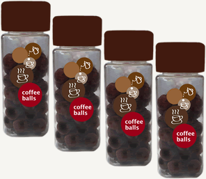

コーヒーボールズの紹介
粉のコーヒーを凝縮して、固形のボール状にしました。 2個に対してお湯250mlを注ぐと適量です。 ラベルに入れ方が一目で分かるイラストを入れました。 手書きスタイルのイラストにすることによって、お手軽さを演出しました。 商品のイメージである球体をかわいらしく配置しました。 容器を透明にし、小さなかわいいボールが目をひきます。 ワンタッチで開け閉めできる蓋にしました。 というように手軽に楽しめるコーヒーボールズはいかがでしょうか？
販売価格 100g 256円（内税）

ご注文方法
コーヒーボールズのご注文について
通常ご注文から２日程で出荷しております。
土曜の午前10時以降〜日曜のご注文は、翌水曜以降の出荷となります。
お支払い方法について
- クレジットカード
- クレジットカードをご利用いただけます。 ＜VISA／JCB／アメリカン・エキスプレス ／マスターカード＞ お支払い回数については1回払いのみとなります。
- ゆうちょ銀行
- ご注文確認メールにてお知らせする、お支払い期限までに 指定口座宛のお振込をお願いいたします。 郵便振替をご利用の方は、記号番号宛にご送金ください。
- 店頭払い
- 受け取り時のお支払いをご希望の方はこちらをご選択ください。
配送方法・送料について
- ゆうメール（100〜300g） 200円
- 【300gまで、お得な配送方法です】 ※お届け日の目安は、発送日の翌々日となります。 100〜300gまでの時（100g平袋を使用します。）。
- レターパック（〜500ｇ） 360円
- 【速達扱いで、早く届きます！】 ※お届け日の目安は、発送日の翌日となります。 ご注文で100〜500gまでの時、（100g平袋を使用します。）ただし、400g以上のご注文でしたら 「送料無料配送」もご選択頂けますのでご利用下さい。
- 送料無料配送（400ｇ以上）
- 【配送方法は選べませんが、お得です！】 ※お届け日の目安は、発送日の翌々日となります。 ご注文で、400g以上ご注文頂く場合に、このサービスをご選択いただけます。 400〜500gはゆうメール、600ｇ以上はゆうパックでお届けします。 （下記地域につき、600g以上は追加送料を頂きます。 北海道、九州＋200円、沖縄＋700円） 500g以下のご注文は、お届け方法（袋の種類、日時）のご指定は出来ません。
- 送料無料配送（400ｇ以上）
- 【配送方法は選べませんが、お得です！】 ※お届け日の目安は、発送日の翌々日となります。 ご注文で、400g以上ご注文頂く場合に、このサービスをご選択いただけます。 400〜500gはゆうメール、600ｇ以上はゆうパックでお届けします。 （下記地域につき、600g以上は追加送料を頂きます。 北海道、九州＋200円、沖縄＋700円） 500g以下のご注文は、お届け方法（袋の種類、日時）のご指定は出来ません。
特定商取引法に基づく表記
| 販売業者 | KISSATEN 喫茶 転 |
|---|---|
| 運営統括責任者名 | 喫茶 転 |
| 郵便番号 | 〒 951-8061 |
| 住所 | 新潟市中央区西堀通6-876 千歳ビル4F |
| 商品代金以外の料金の説明 | 送料、決済手数料 |
| 不良品 | 良品に交換もしくは代金返金 |
| 引渡し時期 | ご注文より通常2日程度で出荷しております。 |
| お支払い方法 | 郵便振替、銀行振込 |
| お支払い期限 | 商品発送日より14日以内 |
| 返品期限 | 発送間違い、初期不良品についてのみ 商品到着から１週間以内は可能です。 |
| 返品送料 | 発送間違い、初期不良品の返品送料は当店が負担いたします。 |
| 屋号またはサービス名 | KISSATEN |
| 電話番号 | 025-211-3233 |
| ホームページアドレス | http://kunren2015.web.fc2.com |